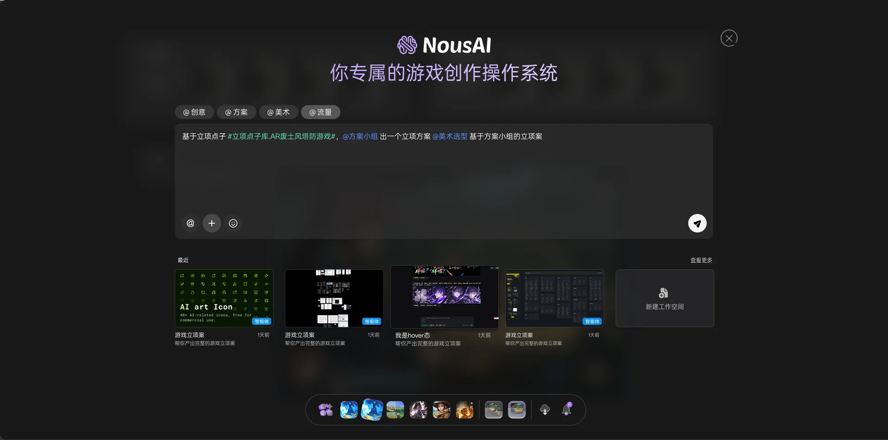
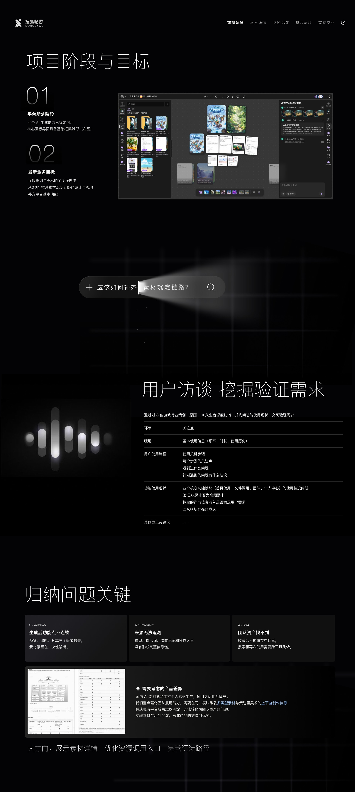
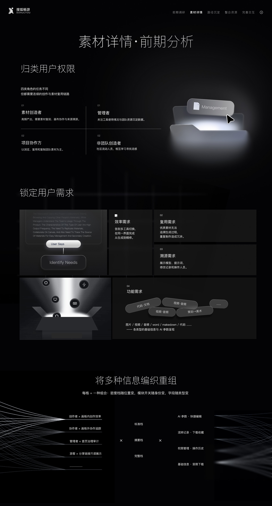
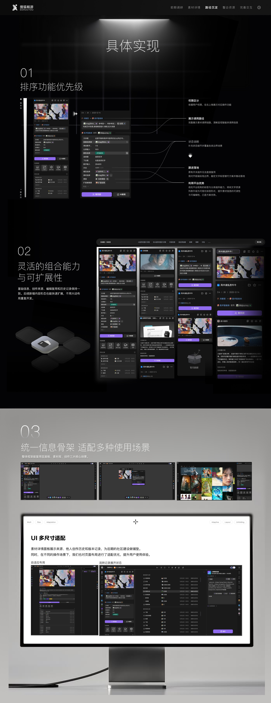
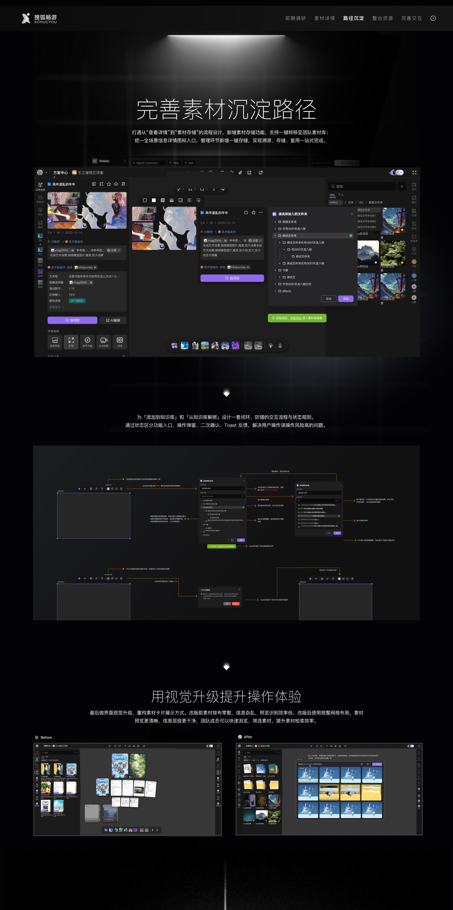
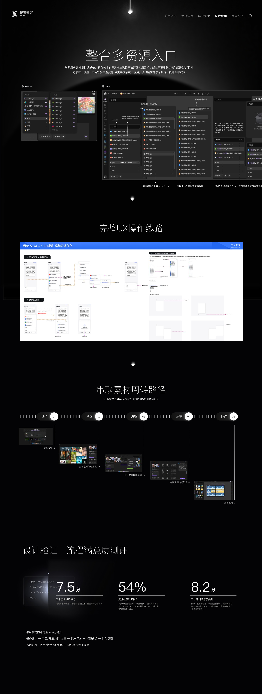
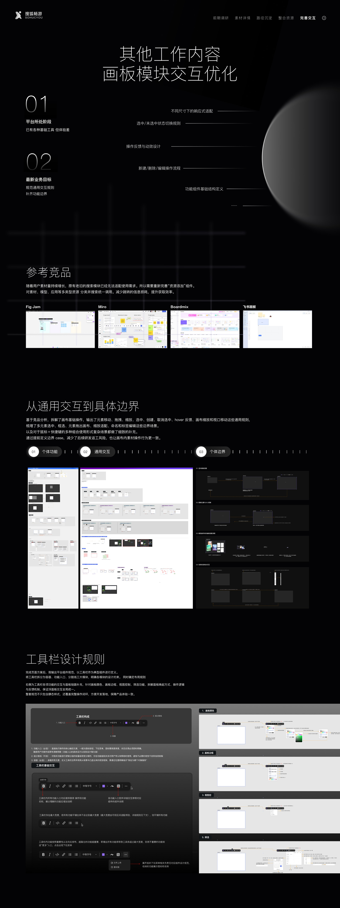
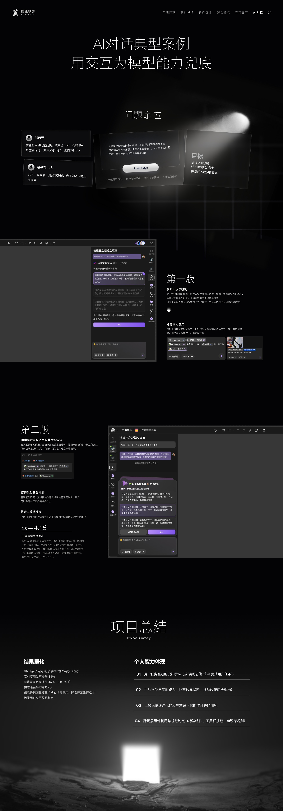

搜狐畅游AI产品介绍
本 AI 创作平台面向小型游戏研发团队，提供一站式资产创作与沉淀工具。
依托平台内置 AI 能力，可完成策划文案、场景及角色美术素材、音乐、代码类资产的生成与存储。
平台打通各岗位项目资产，实现团队信息高效同步，解决文件分散杂乱、版本管理混乱、跨岗位沟通成本高等痛点。








本 AI 创作平台面向小型游戏研发团队，提供一站式资产创作与沉淀工具。
依托平台内置 AI 能力，可完成策划文案、场景及角色美术素材、音乐、代码类资产的生成与存储。
平台打通各岗位项目资产，实现团队信息高效同步，解决文件分散杂乱、版本管理混乱、跨岗位沟通成本高等痛点。







